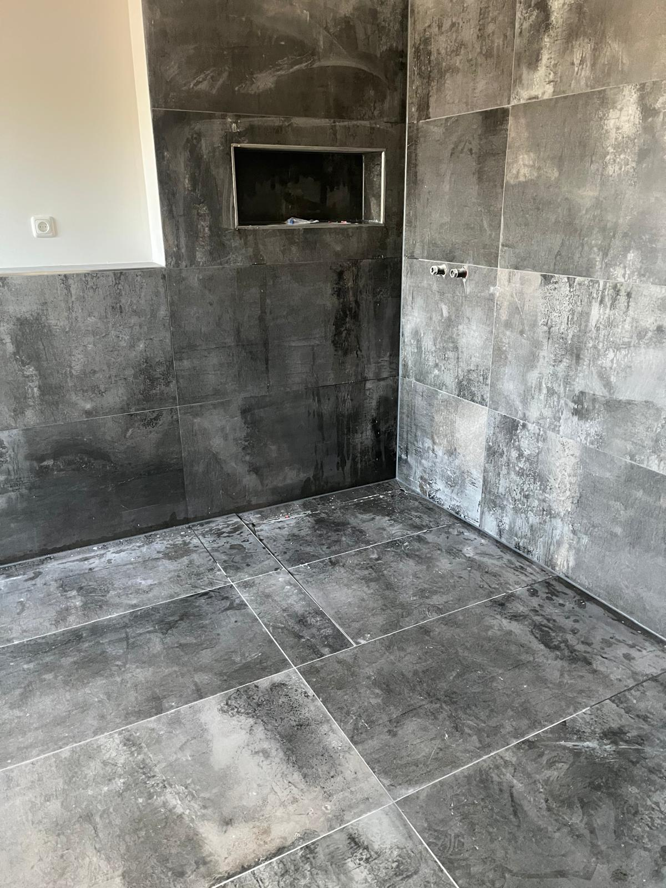
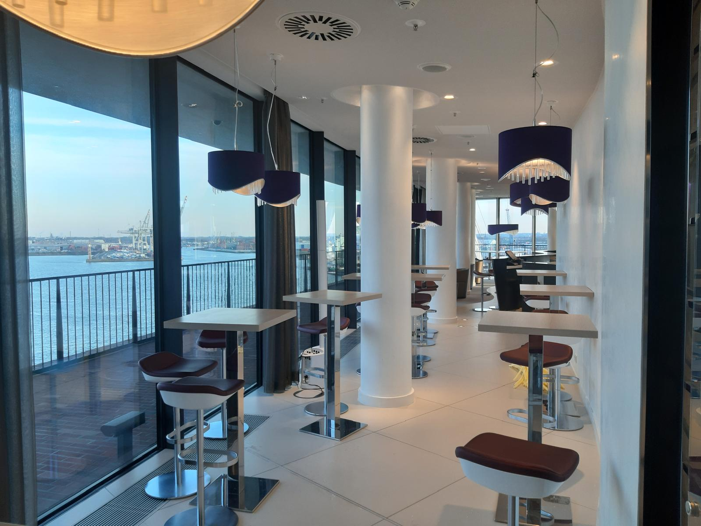

Fugenmeisterbetrieb · seit Jahren in der Region
Saubere, dichte Fugen für Bad, Küche & Naturstein.
Silikon-, PU- & Sanierungsfugen vom zertifizierten Fugenmeister Ibrahim Korkmaz – in Tornesch, im Kreis Pinneberg und in Hamburg.
★ 5,0 · 11 Google-Bewertungen
Zertifiziert & geschult
Privat & Gewerbe



